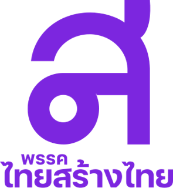

สภาผู้แทนราษฎร ชุดที่ 27 · 500 ที่นั่ง
พรรคการเมือง
พรรคการเมือง
ในสภา
22 พรรคที่มี สส. อยู่ในสภาตอนนี้ กดที่การ์ดเพื่อไปยังเว็บไซต์ของพรรค ถ้าพรรคไม่มีเว็บไซต์ จะไปที่หน้าข้อมูลพรรคของ กกต.
ฝ่ายค้าน
149 สส. · 5 พรรคนำโดยพรรคประชาชน


รัฐบาล
293 สส. · 16 พรรคคณะรัฐมนตรีอนุทิน 2 นำโดยพรรคภูมิใจไทย
พรรคภูมิใจไทย
192 สส.
เว็บไซต์ ↗
พรรคเพื่อไทย
74 สส.
เว็บไซต์ ↗
พรรคประชาชาติ
5 สส.
เว็บไซต์ ↗
พรรคพลังประชารัฐ
5 สส.
ข้อมูล กกต. ↗
พรรคเศรษฐกิจ
3 สส.
เว็บไซต์ ↗

พรรคไทยสร้างไทย 2 สส. เว็บไซต์ ↗ พรรครวมไทยสร้างชาติ 2 สส. เว็บไซต์ ↗ พรรคเพื่อชาติไทย 2 สส. ข้อมูล กกต. ↗ พรรคทางเลือกใหม่ 1 สส. ข้อมูล กกต. ↗ พรรคประชาธิปไตยใหม่ 1 สส. เว็บไซต์ ↗ พรรคมิติใหม่ 1 สส. ข้อมูล กกต. ↗ พรรคไทยทรัพย์ทวี 1 สส. ข้อมูล กกต. ↗ พรรครวมใจไทย 1 สส. ข้อมูล กกต. ↗ พรรครวมพลังประชาชน 1 สส. ข้อมูล กกต. ↗ พรรคใหม่ 1 สส. ข้อมูล กกต. ↗ พรรคโอกาสใหม่ 1 สส. เว็บไซต์ ↗จำนวน สส. และฝ่ายของแต่ละพรรค: วิกิพีเดีย (สภาผู้แทนราษฎรไทย ชุดที่ 27 · คณะรัฐมนตรีไทย คณะที่ 66) ณ 28 พ.ย. 2569 · โลโก้: วิกิพีเดีย และระบบฐานข้อมูลพรรคการเมือง กกต. · สีประจำพรรค: ตารางผลการเลือกตั้ง 2569 ของวิกิพีเดีย